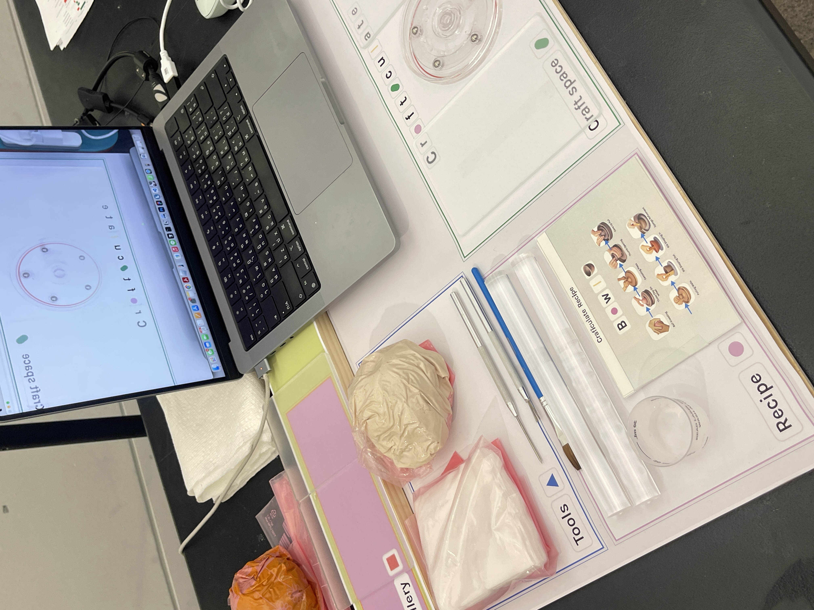
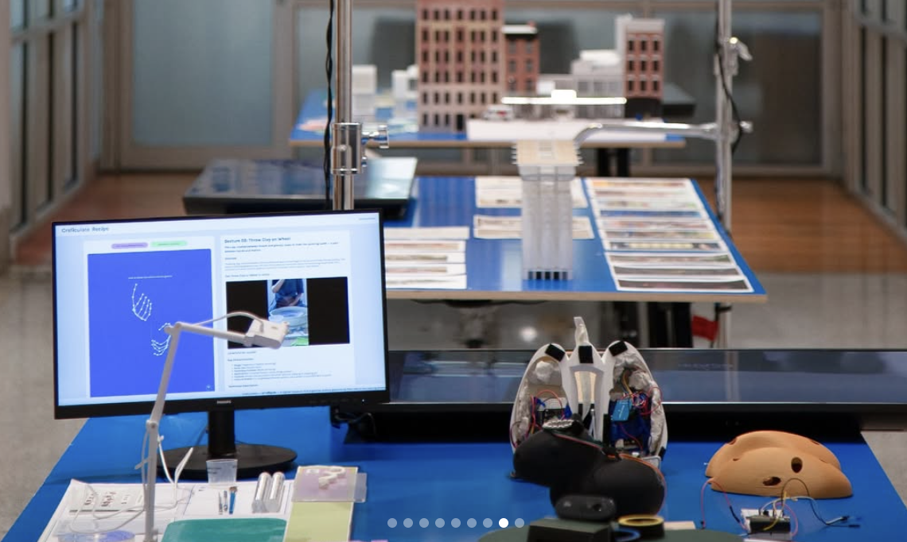
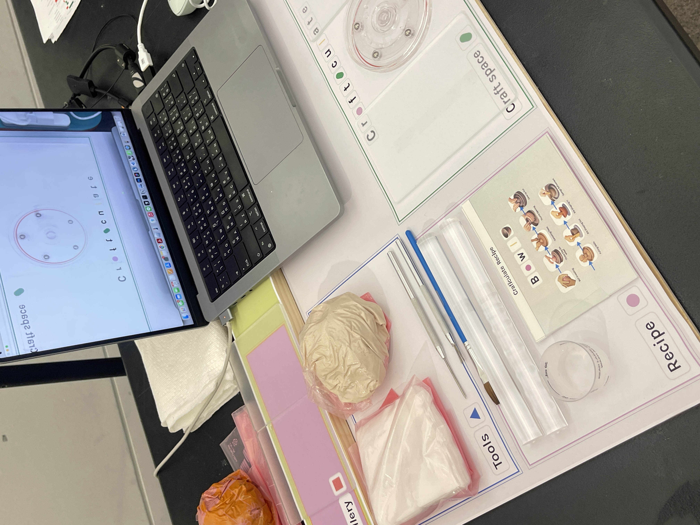
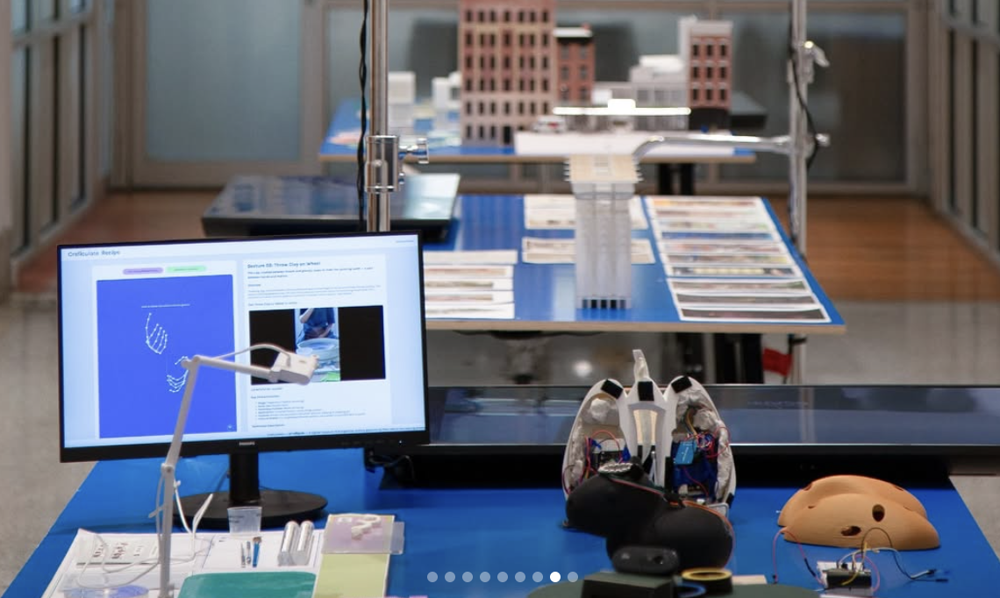

A gesture-based archive that preserves traditional craft knowledge through the lens of technology. Focused on the embodied movements of pottery-making, the project captures, classifies, and reanimates hand gestures using real-time machine learning and computer vision.
Inspired by how techniques are passed through demonstration rather than text, Crafticulate transforms ephemeral acts into interactive digital memory. Each gesture—pinching, pulling, smoothing—becomes a traceable artifact, stored not as video, but as data: adaptable, searchable, and open to reinterpretation.
Users explore the archive through an interface that is itself a site of learning. They can view 3D gesture visualizations, listen to artisan reflections, and even try gestures live using their own hands via webcam. The system responds in real time, offering feedback and inviting users to contribute their own interpretations.
At its core, Crafticulate reimagines preservation not as storage, but as dialogue: between human and machine, memory and movement, tradition and transformation.